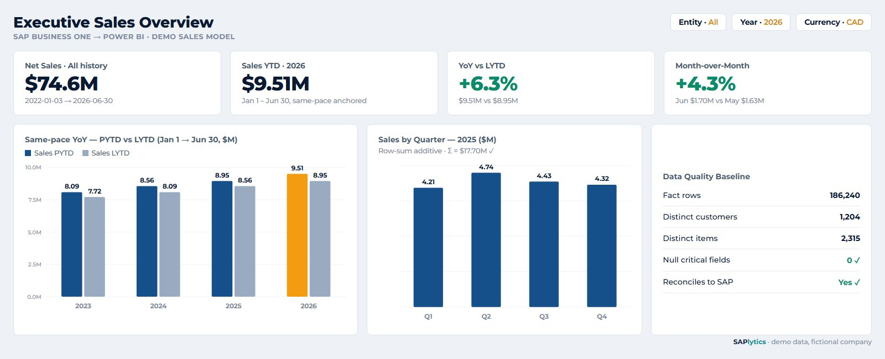
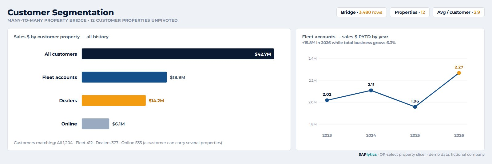
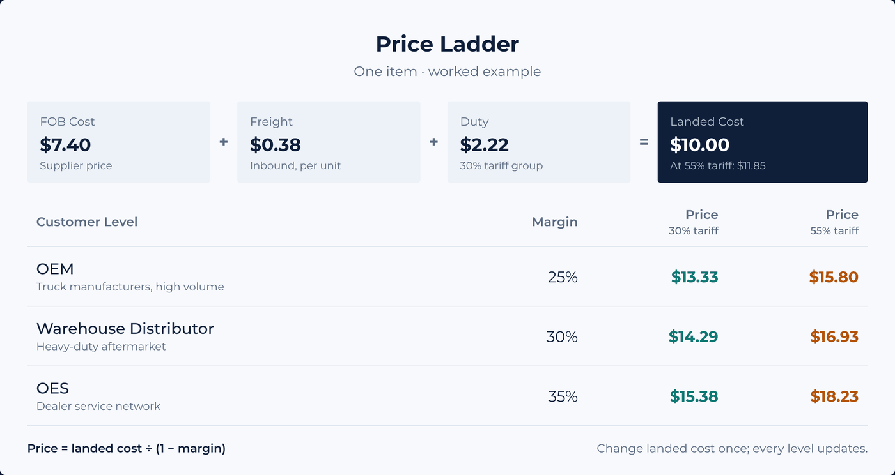
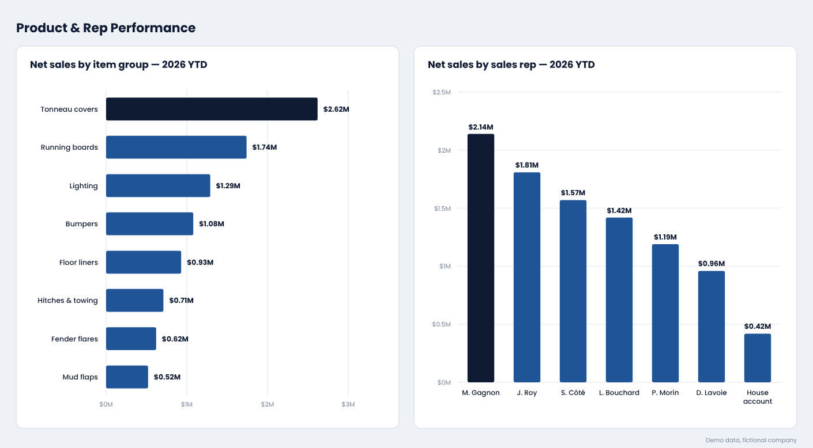

01
Data Health Check
Full Scan of Your SAP Data and Saved Reports
- Saved-Report Review
- Price Lists
- Item Master Data
- Business Partner Master Data
Start Here
Running SAP Business One, but Still:


Delivered In-House on SAP Business One.
Five Connected Practices, All Built on the Same SAP Business One Data.
| Practice | Tools | What It Solves |
|---|---|---|
| SAP B1 & SQL | T-SQL, Query Manager, Crystal Reports | Reports That Finally Match SAP |
| Power BI | DAX, Power Query, Data Modelling | One Live View for Owners and Managers |
| Excel Report Automation | Power Query, Power Automate | No More Rebuilding Reports by Hand |
| Trade & Customs | HTS, Landed Cost, CBSA K32 | Tariffs Priced In, Duty Claimed Back |
| AI & Automation | Claude Code, Python | Hours of Manual Work Removed |
Built by a Working SAP Business One Analyst, Not a Generalist Agency.
Full Scan of Your SAP Data and Saved Reports
Auto-Refresh Reports: Excel or Power BI
See Where Your Business Stands
HTS Code and Tariffs
From First Call to a Report Your Team Trusts.
On your own SAP screens, you show me the report that's off. I explain why, and what fixing it takes. No obligation.
You create a login for me with only the access the work needs.
Reports are built and every figure is checked against SAP before you see it.
You get the reports, the documentation and rollout support in English or French.
Projects Delivered on SAP Business One. Client Figures Kept Confidential.
A reporting library the whole company can trust again.
The Problem. Years of saved SAP queries, written by different people, with no shared rules. Nobody knew which reports could be trusted.
What I Built. An automated review that scored every query for correctness and performance, and a prioritized remediation workbook.

Replenishment planned from real demand, warehouse by warehouse.
The Problem. Reorder points were typed in once and never updated, so stock ran out in one warehouse while it sat idle in another.
What I Built. Min/max per warehouse from 12-month demand, real lead times and the purchasing cycle, in SQL Server and Power BI over both the live and legacy SAP databases.
| Item | Class | On Hand | Min | Max | Buy |
|---|---|---|---|---|---|
| Hydraulic hose, 1/2 in | A | 14 | 40 | 96 | 84 |
| Brake pad set | A | 63 | 55 | 120 | 0 |
| Cable ties, 300 mm | B | 210 | 300 | 720 | 600 |
| Air filter | C | 9 | 6 | 18 | 0 |
| Fuel cap | D | 48 | 0 | 0 | 0 |
Min = average daily demand × lead time + safety stock. Buy = Max − on hand − on order.
Every customer price level calculated from one landed cost.
The Problem. Prices for warehouse distributors, OES and OEM customers were kept by hand, and supplier price files arrived in different formats.
What I Built. A single landed-cost base price that drives every level's price and margin automatically, plus a tool that merges multi-format supplier files into one master price list.

A manual spreadsheet claim process replaced by an end-to-end SQL pipeline.
The Problem. Duty paid on goods imported into Canada can be recovered when the same goods are re-exported to the U.S., but matching thousands of export lines by hand made every claim slow and risky.
What I Built. First-in, first-out matching of each export line to the import entry that paid its duty, five eligibility gates, the CUSMA lesser-of-two-duties rule and the claim arithmetic, all in SQL.
| Export Line | Duty Paid in Canada | Duty Owed in U.S. | Recoverable | |
|---|---|---|---|---|
| Steel lug nut M22 × 2,400 | 201.60 | 1,512.00 | 201.60 | |
| Toolbox latch × 300 | 183.00 | 92.40 | 92.40 | |
| LED marker lamp × 1,200 | 0.00 | 0.00 | Free · dropped | |
| Claim total, lesser of the two duties per line | 294.00 | |||
A duty-free heading recovers nothing, so it leaves the claim before matching.
HTS code, country of origin and landed cost kept complete on every active item.
The Problem. U.S. tariffs changed almost monthly in 2026. Quotes left out Chapter 99 duties, and goods shipped from Canada risked being declared Canadian origin by default.
What I Built. A classification audit in SAP, a duty stack per item, an origin check for re-exported goods, a Section 232 flag for steel and aluminum content, and a landed-cost check on every purchase order line.
| Layer | Rate | Why |
|---|---|---|
| Base duty | 2.5% | Applies |
| Section 301 | +25.0% | China origin |
| Section 338 | 0% | Origin is not Canada |
| Section 232 | on metal value | Needs metal content |
| MPF | 0.3464% | Applies |
| HMF | 0% | Ocean only |
| Effective rate | 27.85% | before Section 232 |
Without a declared metal-content value per item, Section 232 is charged on 100% of the value.
Leadership sees sales, inventory and margin directly, in numbers that match SAP.
The Problem. Sales reports overstated revenue: cancelled invoices and their reversals were both counted, credit memos were ignored and freight repeated on every line.
What I Built. A line-level SAP B1 → Power BI model: invoices minus credit memos, freight at document level, same-pace year-to-date versus last year, and a customer bridge so one customer can sit in several segments.

SAPlytics is how I package what I do: turning a live SAP Business One database into reporting people actually make decisions with.
For more than three years I have owned SAP reporting, master data and import compliance data for a distributor and a coffee manufacturer, as the person the CEO, finance, purchasing, sales and warehouse teams all come to for numbers. I document how things work today, find the gaps, and replace manual work with SQL, Power BI, Excel and Power Automate, then support people until the new way sticks.
What You Get, How, When, and How Your Data Stays Safe.
Working reports your team uses every day: SAP queries, Excel workbooks that refresh themselves, Power BI dashboards, or all three. Each one comes with documentation and a reconciliation that shows its totals match SAP. You own all of it.
It depends on the scope: a Data Health Check is quicker than a full reporting stack. After the free review you get a short written scope with what you'll receive and a delivery date, before any work starts.
Free review, then a read-only login, then build and reconcile, then handover with rollout support. I work remotely anywhere, or on site in Montréal and within about 300 km, including Ottawa, in English or French.
You share your screen and show me a report that doesn't match, or a question SAP can't answer. I explain why, and what fixing it would involve. No obligation.
Yes. You create the login, with only the access the work needs, and you can switch it off at any time. I only read from SAP; nothing is ever written back, and every query is checked for performance before it runs on your live database.
Yes. SAP Business One on SQL Server or HANA, as long as I can connect to a valid company database.
Yes. Old and new SAP databases can be combined into one view, including open orders and backorders rebuilt across the changeover.
Your team can. Every query and model is documented and handed over, and I stay available for changes and support when you need them.
Clean, Auditable SQL That Runs in SAP's Query Manager.
SET TRANSACTION ISOLATION LEVEL READ UNCOMMITTED;
SET NOCOUNT ON;
WITH SalesLines AS (
SELECT H.CardCode, L.ItemCode,
+L.Quantity AS Qty, +L.LineTotal AS NetSales
FROM OINV H
JOIN INV1 L ON L.DocEntry = H.DocEntry
WHERE H.CANCELED = 'N'
AND H.DocDate >= '2026-01-01' AND H.DocDate < '2027-01-01'
UNION ALL
SELECT H.CardCode, L.ItemCode,
-L.Quantity, -L.LineTotal
FROM ORIN H
JOIN RIN1 L ON L.DocEntry = H.DocEntry
WHERE H.CANCELED = 'N'
AND H.DocDate >= '2026-01-01' AND H.DocDate < '2027-01-01'
)
SELECT S.CardCode AS [Customer],
C.CardName AS [Customer Name],
SUM(S.Qty) AS [Net Qty],
SUM(S.NetSales) AS [Net Sales]
FROM SalesLines S
JOIN OCRD C ON C.CardCode = S.CardCode
GROUP BY S.CardCode, C.CardName;Type a table code to see what it holds and how I use it.
One row per customer invoice: customer, dates, totals, currency and status.
How I use it: the base of every sales figure, joined to INV1 for lines and netted against ORIN credit memos. Cancelled documents are filtered out, a common reason SAP sales reports overstate revenue.
Show me which report doesn't match and what it should say; I'll show you why, on your own SAP screens.
Free, No Obligation · Or Connect on LinkedIn